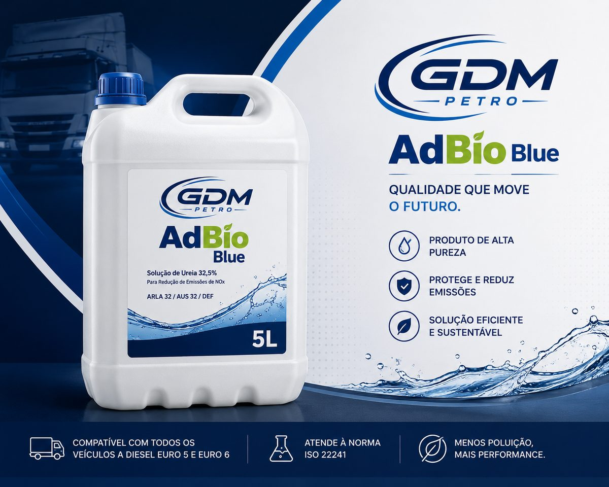
5 LBidão
Reposição para veículos ligeiros e comerciais. Prático, com bico de enchimento.
AdBio Blue é o agente redutor líquido para motores diesel com sistema SCR: reduz as emissões de óxidos de azoto e mantém o seu veículo em conformidade com as normas Euro 4, 5 e 6. Produzido em Portugal, na Zona Industrial de Constantim, Vila Real.
Este projeto só é possível graças ao apoio da União Europeia — FEDER, através do Norte 2030 e do COMPETE 2030, no quadro do Portugal 2030 — e ao acolhimento do Régia Douro Park e do Município de Vila Real. Criação de uma unidade industrial avançada e automatizada para produção de AdBio Blue, com processos inovadores da Indústria 4.0 e de transição climática, visando a redução de emissões de NOx em motores diesel.
A unidade está em atividade e em expansão. O projeto avança por fases:
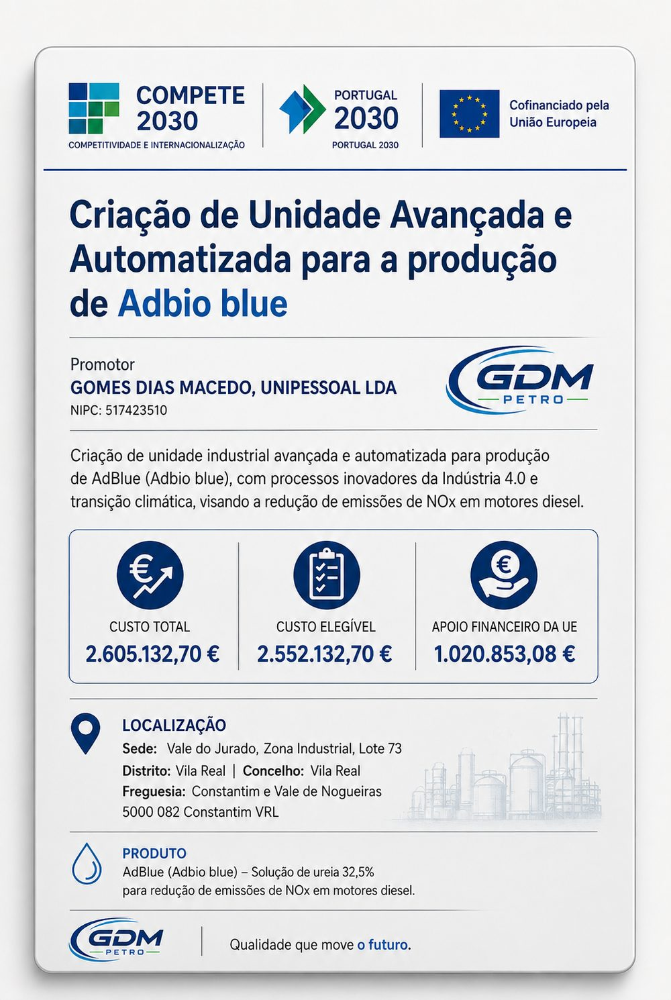
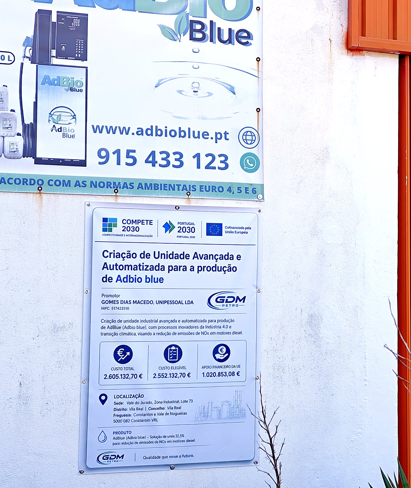
Valores conforme a Notificação da Decisão Final (18/07/2024). Execução em curso dentro do prazo aprovado, com prorrogação concedida. Informação de publicitação nos termos das regras de comunicação do Portugal 2030; placa afixada na fachada da unidade.
O AdBio Blue foi pensado para a cadeia de distribuição real de um agente redutor em Portugal: do posto de combustível à frota, da oficina à loja de bairro.
Além de Portugal, a GDM Petro fornece clientes em Espanha, França, Itália, Alemanha e Grécia, e fora da UE na Argélia.
Utilizamos exclusivamente ureia automotiva de primeira qualidade (grau AUS 32), importada de vários fornecedores para garantir continuidade de abastecimento — Espanha, Polónia, Ucrânia, China e Turquia — e principalmente da Petrobras, no Brasil. A água desmineralizada é produzida na nossa unidade.
Da reposição de um ligeiro ao abastecimento de uma frota inteira. Todos os formatos saem da mesma linha de produção, com o mesmo controlo de qualidade.

Reposição para veículos ligeiros e comerciais. Prático, com bico de enchimento.
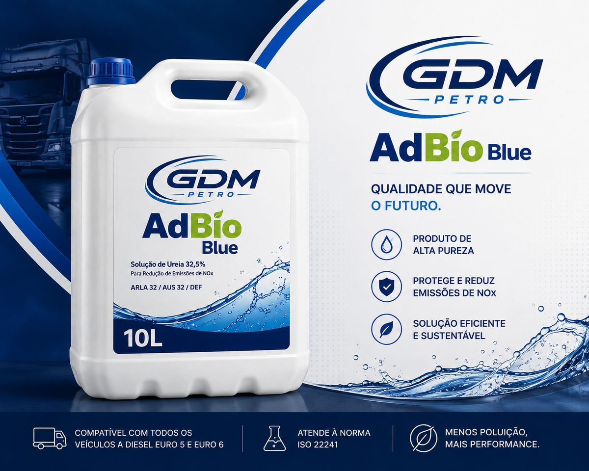
Para quem consome com regularidade e quer menos idas ao posto.
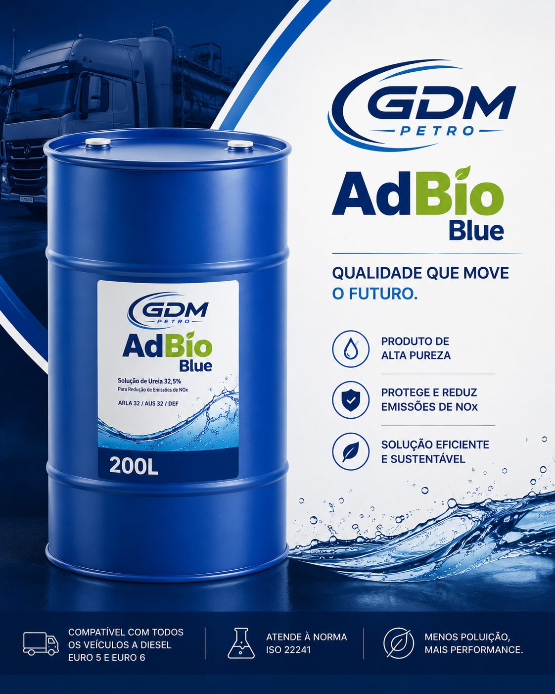
Para oficinas e frotas pequenas e médias que começam a abastecer internamente.
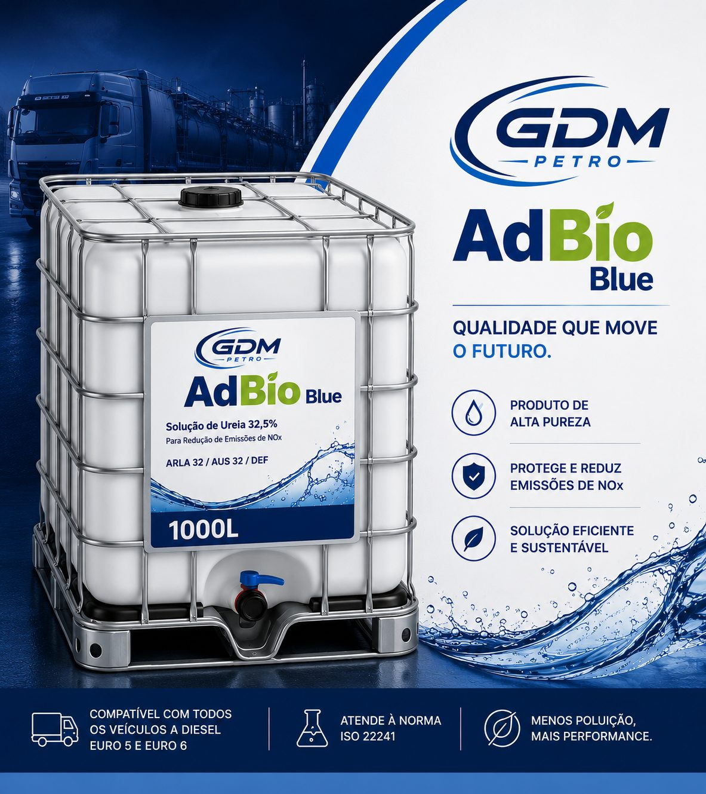
Grandes consumidores. Aceita bomba, contador e mangueira de abastecimento.
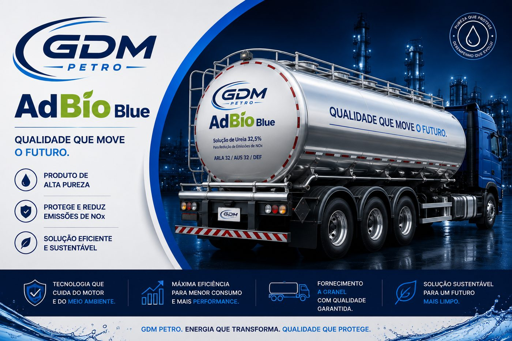
Entrega direta em tanque para frotas, postos de combustível e indústria. Sem embalagem, sem desperdício.
Fornecemos AdBio Blue a granel para bombas de abastecimento em postos de combustível — a forma mais económica e prática para o motorista, e uma tendência clara do mercado.
Para postos de combustível, transportadoras, oficinas e explorações agrícolas, a GDM Petro cede em comodato e instala reservatórios de AdBio Blue com bomba e contador. Sem investimento inicial para o cliente, com fornecimento a granel contratado.
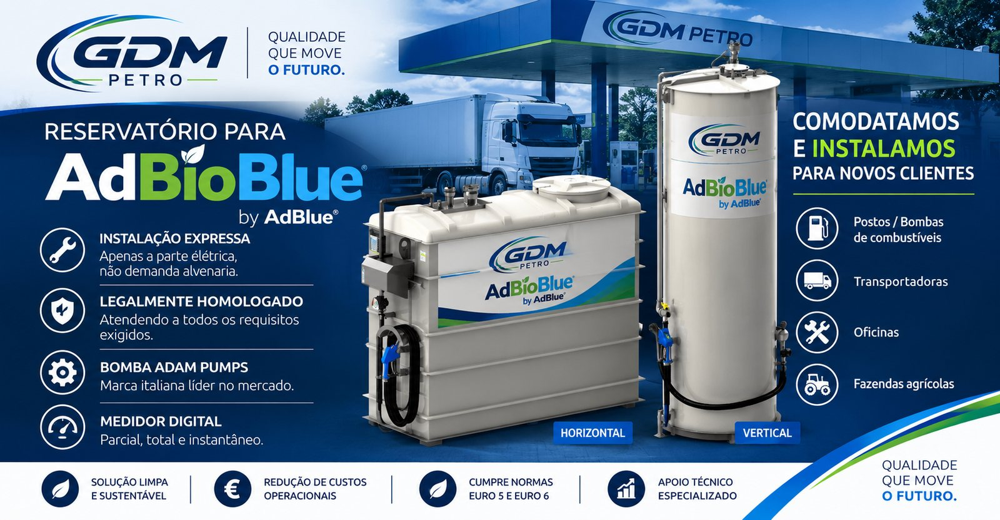
Os motores diesel libertam óxidos de azoto (NOx), um dos principais responsáveis pelo smog urbano, pelas chuvas ácidas e por doenças respiratórias. O sistema SCR (Redução Catalítica Seletiva) injeta AdBio Blue nos gases de escape, onde a ureia se converte em amoníaco e reage com os NOx no catalisador. O resultado à saída do escape é azoto e vapor de água — os mesmos componentes do ar que respiramos.
É esta reação que permite aos veículos pesados e ligeiros cumprir as normas Euro 4, 5 e 6. E há um efeito indireto que importa para o clima: com o SCR a tratar os NOx no escape, o motor pode ser calibrado para queimar de forma mais eficiente, consumindo menos combustível e emitindo menos CO₂ por quilómetro.
A unidade da GDM Petro na Zona Industrial de Constantim foi criada de raiz para produzir AdBio Blue: tanques em aço inoxidável, mistura e doseamento automatizados, e verificação da concentração de ureia em cada lote com refratómetro digital.
Armazenamento e transporte dedicados garantem que o produto chega ao cliente com a mesma pureza com que saiu da linha — o que protege o catalisador SCR e o injetor do seu veículo.
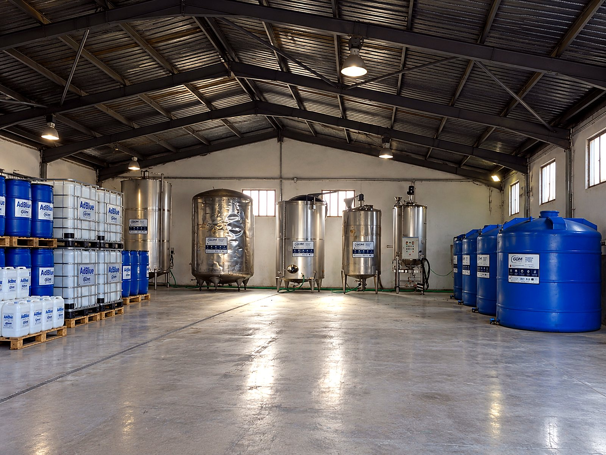
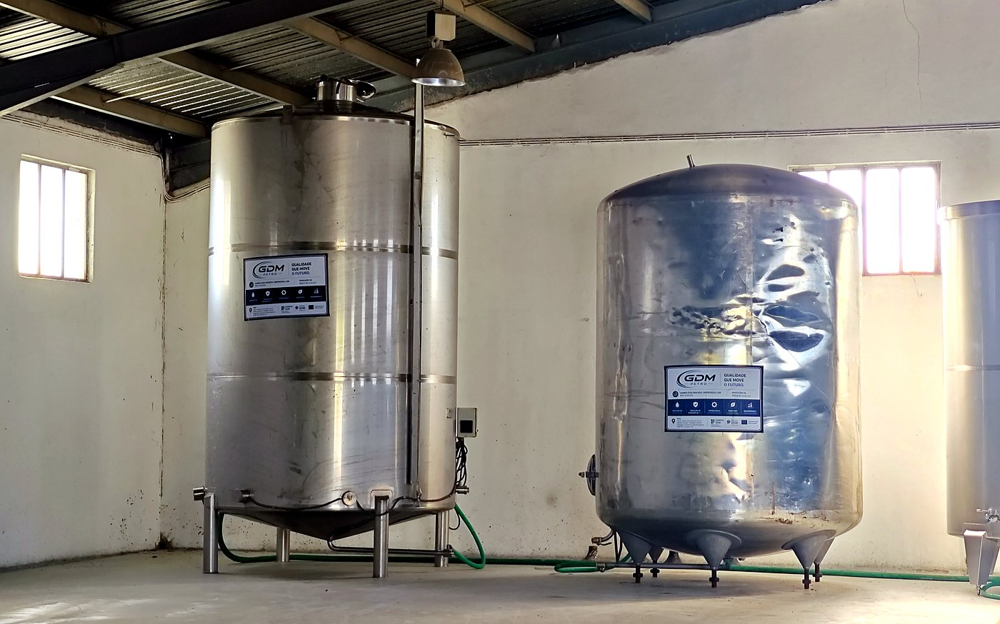
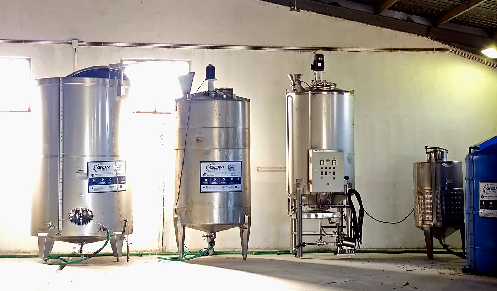
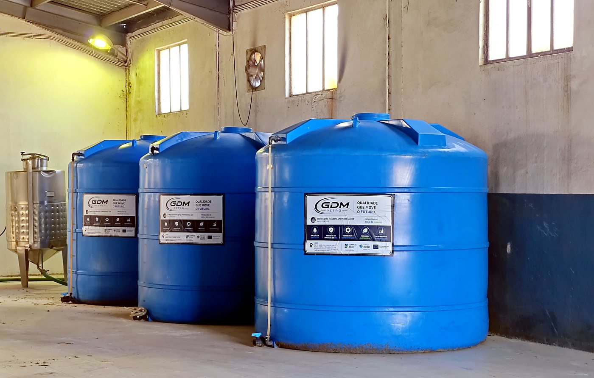
A água desmineralizada que produzimos para o AdBio Blue é também vendida como produto, e a gama continua a crescer.
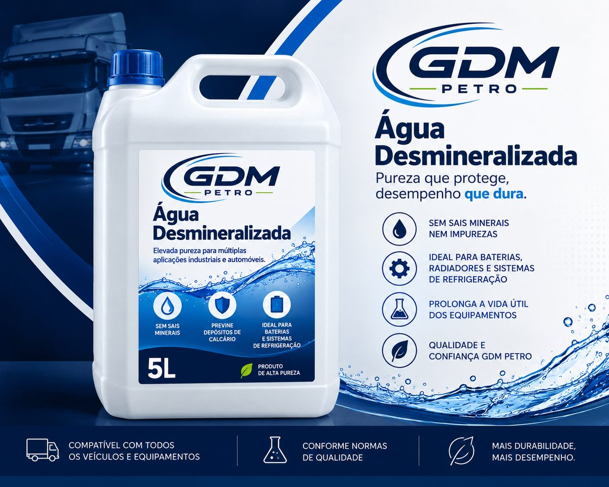
Sem sais minerais nem impurezas. Para baterias, radiadores, sistemas de refrigeração e uso industrial. Fornecida a granel hoje; embalagem de 5 L em preparação.
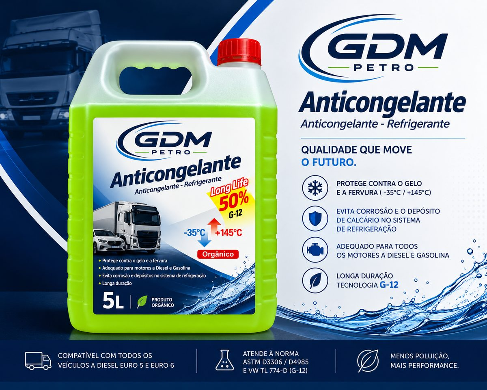
Orgânico, longa duração (tecnologia G‑12), proteção de −35 °C a +145 °C, para motores diesel e gasolina.
Orçamentos para frotas, postos de combustível, oficinas e revenda. Respondemos em dias úteis.